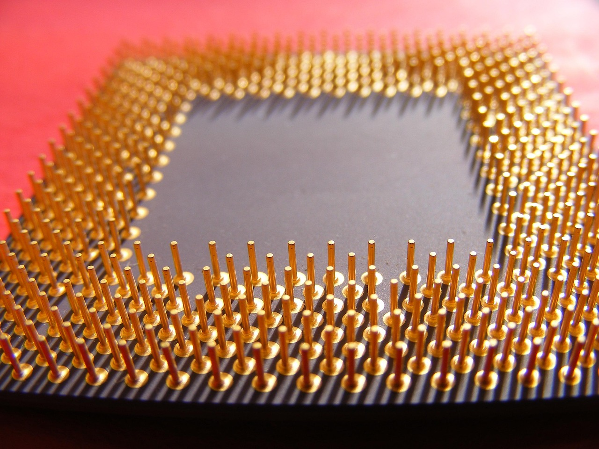

Wolfspeed, SiC 생산에 美 정부 15억 달러 조건부 지원 확보

미국 탄화규소(SiC) 반도체 전문 기업 Wolfspeed가 미국 에너지부(DOE)로부터 15억 달러(약 2조 원) 규모의 조건부 지원 약정을 획득했다고 밝혔다. 이번 지원은 국내 와이드밴드갭(WBG) 반도체 기술 플랫폼 강화를 위한 장기 자금 조달 계획의 일환이다.
SiC는 기존 실리콘(Si) 반도체 대비 고온·고전압 환경에서 훨씬 효율적으로 동작하는 차세대 전력 반도체 소재다. 전기차, 신재생에너지 인버터, 산업용 모터 등 고전력 응용 분야에서 급격히 수요가 확대되고 있으며, 2030년까지 SiC 전력 반도체 시장은 연평균 30% 이상 성장이 예상된다.
Wolfspeed는 현재 미국 노스캐롤라이나 주 더럼에 본사를 두고 있으며, 뉴욕 마르시에 대형 SiC 웨이퍼 제조 시설을 운영 중이다. 이번 정부 지원금은 주로 국내 생산 설비 확장과 연구개발 역량 강화에 투입될 예정이다.
이번 지원 결정은 미국 정부가 반도체 공급망 자립화 전략에서 논리 반도체뿐 아니라 전력 반도체 소재까지 전선을 확대하고 있음을 보여준다. 미 CHIPS법 시행 이후 인텔·TSMC·삼성 등 대형 파운드리에 집중됐던 지원이 소재·특수 반도체 영역으로 분산되는 흐름이다.
Wolfspeed는 앞서 재무 구조 개선을 위해 채권 발행과 주식 매각 등 다양한 자금 조달 수단을 병행 추진해 왔다. 2026년 상반기 기준 회사의 부채 비율이 높아지면서 투자자 우려가 컸으나, 이번 정부 약정이 신용도 안정에 기여할 것으로 업계는 평가한다.
SiC 웨이퍼 시장은 현재 Wolfspeed와 일본의 Rohm, 독일의 Infineon이 3강 구도를 형성하고 있다. 중국은 자국 SiC 산업 육성에 박차를 가하고 있어, 미국의 이번 투자는 공급망 주도권을 유지하려는 전략적 대응으로도 해석된다.
국내에서는 SK실트론이 미국 듀폰으로부터 SiC 웨이퍼 사업부를 인수한 이후 미국 내 생산 거점을 확보한 상태다. Wolfspeed에 대한 미국 정부의 대규모 지원이 현실화될 경우, SK실트론 등 국내 기업과의 경쟁 구도에도 영향을 미칠 수 있다.
전력 반도체 수요 측면에서는 전기차(EV) 시장이 핵심 변수다. 2026년 전 세계 전기차 판매량은 1,800만 대를 넘어설 것으로 예측되며, 차량 1대당 SiC 탑재량도 지속적으로 늘고 있다. 여기에 AI 데이터센터의 전력 공급 인프라 고도화 수요도 SiC 수요를 끌어올리는 추가 동인으로 부상했다.
업계 전문가들은 이번 지원이 Wolfspeed의 단기 유동성 문제를 해소하는 데 그치지 않고, 미국 내 SiC 생태계 전반의 공급 역량 확충으로 이어질 것에 주목한다. 한 반도체 애널리스트는 "정부 자금이 투입되면 Wolfspeed는 본격적인 캐파(Capa) 확대에 나설 수 있고, 이는 SiC 웨이퍼 공급 부족 해소와 가격 안정으로 연결될 것"이라고 분석했다.
미국 에너지부는 이번 지원 외에도 핵심광물·소재 분야 가속화 프로그램(Critical Minerals and Materials Accelerator)을 통해 WBG 소재 공급망 전반에 대한 지원을 확대하고 있다. Wolfspeed에 대한 약정이 최종 확정되면, 이 프로그램의 가장 큰 단일 수혜 사례가 될 전망이다.
국내 전력 반도체 소재 산업에도 간접적 파급이 예상된다. 미국 SiC 생산 확대로 글로벌 공급이 늘어나면 단기적으로는 가격 압박이 될 수 있지만, 장기적으로는 SiC 채택이 가속화돼 전체 시장 파이가 커지는 효과가 기대된다. 국내 소재·장비 기업들이 SiC 밸류체인에서 기회를 찾을 시점이라는 분석도 나온다.
향후 SiC 반도체 시장은 공급망 국산화, 정부 지원, 전기차·AI 인프라 수요가 동시에 맞물리는 복합 성장 국면에 진입할 전망이다. Wolfspeed의 이번 지원 확보는 그 전환점을 상징하는 이정표로, 글로벌 전력 반도체 소재 판도 변화에 주목할 필요가 있다.